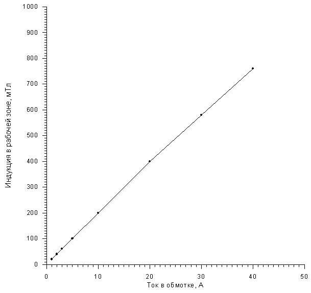
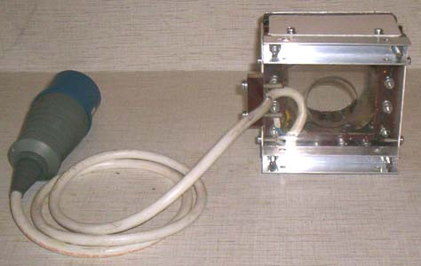
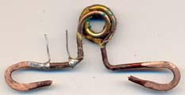

1. Локальная копия: что и где лежит
Копия снята 3 ноября 2026. Начали с трёх адресов: imlab.narod.ru/M_Fields/Magn_Equip/ — это каталог установок намагничивания, /M_Fields/ — весь раздел «Магнитные поля» и главная страница. Обход шёл по ссылкам, поэтому сохранены и связанные страницы, и все картинки. Относительные ссылки внутри копии не переписаны: структура работает так же, как на сайте.
refs/imlab/index.html— главная страница сайта. Разделы: Магнитные поля, Электроника, Механотроника, Энергетика…;refs/imlab/M_Fields/Magn_Equip/Magn_Equip.htm— «Установки импульсного намагничивания и размагничивания постоянных магнитов», с неё идут все ссылки на конкретные изделия;refs/imlab/M_Fields/M_Fields.htm— указатель раздела «Магнитные поля», в нём 124 страницы;refs/imlab/_text/…— тот же текст страниц простым текстом: по нему удобно искать по всему собранному;
refs/imlab/_notes/specs.md— выжимка разделов «Назначение / Технические данные / Конструкция» по 36 устройствам;refs/imlab/_notes/fixtures.json— паспортные данные оснасток, вынутые из страниц программно: поле → ток → габариты.
| Что | Сколько | Где |
|---|---|---|
| HTML-страниц сайта целиком, в том числе 124 страницы раздела «Магнитные поля» | 272 | refs/imlab/… — повторяет структуру сайта, 8.8 МБ |
| страниц каталога установок намагничивания и оснасток | 54 | refs/imlab/M_Fields/<изделие>/… — все позиции каталога на месте |
| Рисунков (jpg/gif/png/bmp) | 3145 | лежат рядом со страницами, куда они вставлены; все ссылки на рисунки ведут на существующие файлы, 70.6 МБ |
| Архивов с программами автора (.rar) | 30 | например refs/imlab/M_Fields/Coil10/Coil_20d.rar, …/UNI/UNI_20d.rar, …/dTWire/dTWire10.rar, …/Linear_PM_Generator/RMS_Calculation.rar |
| Того же текста страниц простым текстом — для поиска по всему собранному | 300 | refs/imlab/_text/… |
| Всего | 91 МБ | 3754 файла |
Цен на сайте нет. Это описания сделанных автором приборов, а не каталог продаж, поэтому сумм в этом документе тоже нет. Если при обновлении копии появятся цены, выписывать их только в рублях.
Целостность копии проверена скриптом calc/src/imlab_check.py. Отчёт лежит в refs/imlab/_notes/integrity.md. Итог проверки: 272 страницы, недостающих картинок 0, битых внутренних ссылок 0, обрезанных и пустых страниц 0. По пути копию чинили. Удалён дубликат страницы каталога, сохранённый в корне копии: из-за него 122 ссылки выглядели битыми. Докачаны 19 страниц каталога: UNI_250, UNI_100, UNI_100_80, UNI_70, UNI_80, UNI_8r, UNI8r_30, UNI_1_35_60, UNI_3_20_60, UNI_Alnico, UNI_Alnico_200x700, UNI_NeFeB_45x30x20, Inductor_Core10, Inductor_140x60, Inductor_31x60x80, Inductor_40x80, Inductor_60x30, Inductor_D20_H20, Inductor_D30_H20. Докачаны ещё ~45 страниц раздела и архив программы RMS_Calculation.rar. Вместо 337 скачанных тогда рисунков теперь все 3145.
Копия читается без сети. Из страниц убраны теги, которые обращались к narod.ru и ucoz: скрипты, счётчики, рекламный фрейм. Это 449 тегов; оригиналы сохранены в комментариях-маркерах и возвращаются командой --online. Сам jquery подтянут из локального refs/imlab/.s/. Если при следующем обновлении часть рисунков снова не докачается, на их месте встанет пунктирный блок «рисунок … не скачан — открыть на сайте». Битой пиктограммы не будет (§10).
2. Указатель: какая страница за что отвечает
Пути относительные, от корня копии refs/imlab/. Всё перечисленное скачано и открывается офлайн.
| Тема | Страница в копии | Что там полезного |
|---|---|---|
| Генераторы импульсов тока | M_Fields/E_10/E_10.htm | Ёмкостной накопитель. Модификации: 0.15 кДж/550 В (2.5 кг), 0.4 кДж/900 В, 0.5(1) кДж/900 В и 1(2) кДж/500 В. Ток до 10 кА. Заряд от 220 В занимает ≤60…120 с. Полярность меняют перестановкой разъёма |
M_Fields/Gi_10MR/Gi_10MR.htm | Однополярный генератор прямо от сети. До 2000 А, импульс 10…30 мс. Управление «одна кнопка». Описаны требования к питающим сетям | |
M_Fields/GI_23_2/Gi_23_2.htm | Биполярный генератор: серия импульсов переменной полярности. На нём делают размагничивание | |
| Оснастки-соленоиды: поле в bore, то есть внутри намотки | M_Fields/E_10_Inductor_SM/E_10_Inductor_SM.htm | Ближайший аналог нашей оснастки. bore 110×72 мм, 215 витков шиной 2.4×1.6 мм. Заявлено 1.25 Тл при ≤900 А, расчёт даёт 1.412 Тл при 780 А, измерено 1.5 Тл. Стальной корпус, а съёмная крышка работает как верхний полюс |
M_Fields/E_15_Inductor_3T/E_15_Inductor_3T.htm | 3.5 Тл в bore 15 мм при 350 А, 285 витков ⌀0.8 мм. Показан полный цикл «расчёт → измерение», включая перегрев провода за импульс | |
M_Fields/UNI_25/UNI_25.htm, M_Fields/Uni_3_8_4/UNI_3_8_4.htm | Оснастки для неодим-железо-бора. 3 Тл в bore 25×12 мм и 3 Тл в bore 33×40 мм при 1200 А. Неоднородность ≤10 % | |
M_Fields/Inductor_D_35x40/Inductor_D_35x40.htm | Диаметральное намагничивание: 3.5…4.0 Тл при 2000 А в зоне ⌀35×40 мм | |
| Оснастки с магнитопроводом и полюсами | M_Fields/Imp_EM/Imp_EM.htm | Двухкатушечный электромагнит изменяемой конфигурации. 0.9 Тл в зазоре 30 мм при 200 А; L 25 мГн, R 1 Ом. Сделан как замена НА-5ВИМ |
M_Fields/Inductor_8pol/Inductor_8pol.htm | 8-полюсный наборный статор с зубцами 17×17 мм. 1 Тл при 500 А, 30 циклов/ч | |
M_Fields/Inductor_10x110x80/Inductor_10x110x80.htm | Катушка в рамке из четырёх стальных плит. 13 мТл/А без ярма → 20 мТл/А с ярмом. Плиты крепятся шпильками, катушка зажимается винтами с изолирующими прокладками | |
M_Fields/UNI_140/UNI_140.htm | Оснастка под ферритовые блоки 140×96×120 мм: 1 Тл при 1200 А | |
| Многополюсные и «наконечниковые» | M_Fields/UNI_6a/UNI_6a.htm, M_Fields/UNI_8a/UNI_8a.htm | 6- и 8-полюсное аксиальное намагничивание ферритовых колец. Кольца: отверстие от 20 мм, OD до 70 мм, высота до 10 мм. 1 Тл на поверхности полюсных наконечников при 1000 А |
M_Fields/UNI_170/UNI_170.htm | Оснастка для магнитных систем динамических головок. Ферритовые кольца до ⌀170 мм, высота 45 мм. ≥0.9 Тл при ≤1200 А, неоднородность ≤15 %, 150 циклов/ч. Есть обдув и датчик температуры | |
M_Fields/UNI_10/UNI_10.htm | Многополюсное намагничивание «стикеров» 60×80×5 мм: 1 Тл при 1500 А | |
M_Fields/UNI_Rotor/UNI_Rotor.htm | Реверсивное намагничивание полюсов ротора, с чередованием полярности. 1 Тл при 1000 А | |
| Размагничивание | M_Fields/St_Demagn/St_Demagn.htm | Теория и практика: петля гистерезиса и «методика размагничивания» — поле с затухающей амплитудой. Даётся обзор всех его демагнетизаторов |
M_Fields/Imp_Demagn*/Imp_Demagn*.htm | Импульсные демагнетизаторы контейнерного типа: зоны 140×140×140, ⌀200, 200×200×700 мм | |
| Измерение | M_Fields/ITC/ITC.htm | Как мерить амплитуду импульса тока. Участок провода ⌀2.5 мм длиной 1 см даёт 3.4 мОм, то есть 3.4 мВ/А. Готовые шунты 75ШСМ дают 1…1.5 мВ/А. Эталонная катушка 5 витков — 200 мкТл/А, с ней тесламетр. Импульсные трансформаторы тока: получено 7500 А там, где генератор даёт 2000 А |
M_Fields/Magn_Meas/Magn_Meas.htm | Тесламетры с датчиками Холла: аналоговый импульсный с выходом 1 В/Тл и цифровые. Измерительные катушки для переменного и импульсного поля | |
M_Fields/Calibration_Coil500/Calibration_Coil500.htm | Калибровочный соленоид 500 мм для поверки датчиков | |
| Расчётные программы автора | M_Fields/Coil10/Coil10.htm + Coil_20d.rar, Coil_21d.rar | Coil: по виткам считает R, L и поле соленоида; окно с графиками. В архиве лежит Coil_20d.exe, 186 КБ, 2004 год |
M_Fields/UNI/UNI.htm + UNI_20d.rar, M_Fields/dTWire/… | UNI: разряд батареи на R-L нагрузку, на выходе амплитуда и длительность импульса. Есть режим питания от сети с внутренним сопротивлением. dTWire: нагрев провода за одиночный импульс | |
| Справочник по материалам | M_Fields/Magnet_Models/Magnet_Models.htm | Марки и таблицы. Ферриты 19БА190 и 28СА250: в названии зашиты (BH)max в кА·Тл/м и Hcb в кА/м. Есть ЮНДК, самарий-кобальт и неодим-железо-бор по ТУ 6391-012-89705503-2012: НПМ-30…НПМ-45 ↔ N30…N45, Hcb 790…955 кА/м |
| Теория поля | M_Fields/Magn_Field/Magn_Field.htm, M_Fields/Magnet_02/…, M_Fields/Soft_magn_BH/… | Законы и уравнения магнитного поля, оптимальная высота магнита, кривые намагничивания мягкой стали |
3. Как автор делит установки (то же самое пригодилось и нам)
Любая установка — это генератор мощных импульсов тока плюс намагничивающее устройство. Индуктор бывает соленоидом или электромагнитом. Дальше выбор идёт по трём осям.
Ось 1. Генератор
| Тип | Что это | Плюсы / минусы по автору |
|---|---|---|
Без накопителя энергииGi_10MR (однополярный), GI_23_2 (биполярный) | Полупериод сети подаётся в нагрузку через ключ. До 2000 А, длительность 10…30 мс, «одна кнопка» | надёжнее, проще, больше производительность, дешевле. Но: нужна сеть 220/380 В с малым внутренним сопротивлением. Он прямо пишет про 380 В с Rвн ≈ 0.25 Ом |
С ёмкостным накопителемE_10, E_15 | Батарея конденсаторов 0.15…2 кДж на 500…900 В, разряд на R-L нагрузку. До 10 000 А на коротких импульсах | Работает от обычной бытовой сети 220 В. Амплитуда регулируется напряжением заряда, полярность — перестановкой разъёма. Но: заряд 60…120 с на импульс |
Наша схема — 220 В → T1 230→255 В → ламповый балласт 2×100 Вт → банк 47 мФ на 300 В → VT1. Это второй тип, только на низком напряжении и с большой ёмкостью. Их цифры по заряду — «0.5 кДж не более 60 с» и «2 кДж не более 120 с» — хороший ориентир. Наш расчёт даёт заряд до 300 В за 57 с при 2.12 кДж: тот же порядок.
Ось 2. Индуктор
- Соленоид — bore задаёт зону, поле в ней почти однородно, ярмо не нужно или играет роль корпуса. Так сделаны
UNI_25,Uni_3_8_4,Inductor_D_35x40,E_10_Inductor_SM. - Электромагнит с полюсами/зубцами — поле в узком зазоре у наконечников. Так сделаны
Imp_EM,Inductor_8pol,UNI_6a,UNI_8a,UNI_10,UNI_Rotor. - Отдельно он отмечает: «для каждого изделия и каждой марки магнита разрабатывается отдельное намагничивающее устройство» — то есть оснастка всегда под конкретное изделие, универсальность покупается током.
Ось 3. Требуемое поле по материалу
| Магнит | Что заявляет сайт |
|---|---|
| Ферриты Ba/Sr, легированный РЗМ феррит, ЮНДК | достаточно амплитуды до 1 Тл в зоне намагничивания. Все их ферритовые оснастки спроектированы под 1 Тл |
| NdFeB, SmCo | нужно 3 Тл и более — отсюда их 3.5 Тл в bore 15 мм и 3 Тл в bore 33 мм |
| Хитрость автора | специальный режим предварительной термообработки РЗМ существенно снижает требуемую индукцию — тогда РЗМ можно намагничивать оснасткой, сделанной под ферриты |
4. Паспортные данные оснасток из копии
Значения выписаны дословно из разделов «Технические данные». «Тл/кА» — это заявленная индукция, делённая на заявленный ток. По сути это выход по полю на килоампер. Первичную выжимку делает calc/src/imlab_table.py → refs/imlab/_notes/fixtures.md. Ниже значения, проверенные по страницам вручную.
| Оснастка | Зона, мм | B, Тл | I, А | Тл/кА | витков | R, Ом | L | Примечание из страницы |
|---|---|---|---|---|---|---|---|---|
| E_10_Inductor_SM | ⌀110 × 72 | ≥1.25 | ≤900 | 1.4 | 215 | 0.38…0.40 | 5.0 мГн | соленоид в стальном корпусе, крышка = верхний полюс. Накопитель 4 кДж 900 В. Расчёт даёт 1.412 Тл при 780 А, измерено 1.5 Тл |
| E_15_Inductor_3T | ⌀15 × 16…20 | ≥3.5 | ≤350 | 10.0 | 285 | 0.72…0.85 | 0.87 мГн (с корпусом 1.15…1.23) | Провод ПЭТ-155 ⌀0.8 мм. Накопитель 150 Дж 550 В. Измерено 3.4 Тл без наконечников и 3.6 Тл с одним |
| Magnetizer_110_220 | — | ≥1.25 | ≤350 | 3.6 | 150 | 0.70 | — | магнетайзер для магнитных систем модельных двигателей. Провод ПЭТ-155 ⌀0.7 мм |
| UNI_25 | ⌀25 × 12 | до 3 | ≤1200 | 2.5 | — | — | — | под NdFeB/SmCo, неоднородность ≤10 % |
| Uni_3_8_4 | ⌀33 × 40 | ≥3 | ≤1200 | 2.5 | — | — | — | до 120 циклов/ч, средняя мощность ≤300 Вт при 2 импульса/мин |
| Inductor_D_35x40 | ⌀35 × 40 | 3.5…4.0 | ≤2000 | 2.0 | — | — | — | диаметральное намагничивание РЗМ-роторов турбодетандеров |
| UNI_140 | 140 × 96 × 120 (прямоуг.) | ≥1 | ≤1200 | 0.8 | — | — | — | ферритовые блоки «для динамических головок/динамо-моторов» |
| UNI_170 | ⌀170 × 45 (кольцо) | ≥0.9 / ≥1.0 | ≤1200 / ≤1400 | 0.7 | — | — | — | магнитные системы динамических головок, феррит БА/СА; ≤15 % неоднородности, импульс ≤30 мс, 280×280×80 мм, 20 кг, 250 Вт при 0.1 Гц, обдув, 150 циклов/ч |
| UNI_6a / UNI_8a | кольца OD ≤70, h ≤10 | ≥1 | ≤1000 | 1.0 | — | — | — | 6/8-полюсное аксиальное намагничивание; B указана на поверхности полюсных наконечников |
| UNI_10 | изделие до 60×80×5 мм | ≥1 | ≤1500 | 0.7 | — | — | — | многополюсное намагничивание магнитных стикеров |
| UNI_Rotor | по размеру магнита ротора | ≥1 | ≤1000 | 1.0 | — | — | — | намагничивание полюсов ротора с чередованием полярности |
| Imp_EM | зазор 30 мм между полюсами | ≥0.9 | ≤200 | 4.5 | — | 1.0 | 25 мГн | два основания-магнитопровода из швеллеров и две катушки с сердечниками из стальных пластин. Питание 1 кДж 500 В, импульс ~60 мс |
| Inductor_8pol | 8 зон 17×17×15 | до 1 | ≤500 | 2.0 | — | 0.36 | 0.405 мГн (расч.), 0.76 мГн (изм. 1 кГц) | наборный статор с зубцами, катушки включены встречно-последовательно. 1 кДж 500 В, 30 циклов/ч |
| Inductor_10x110x80 | щель 10×110×80 | 0.58 при 30 А 0.76 при 40 А | ≤150 (кратковр.) ≤200 (импульс) | 13→20 мТл/А | — | 4.5 | 115 мГн | ярмо из четырёх плит. Приведён коэффициент без ярма — 13 мТл/А, и с ярмом — 20 мТл/А. 3 с при 150 А до перегрева 75 °C |
| UNI_80 | ⌀80 × 90 | ≥1.25 в центре ≥1.0 на краях | ≤1000 (макс. 1500) | 1.0…1.25 | 115 | 0.06 | 0.88 мГн | полностью опубликованная конструкция «нашего типа». Соленоид со сквозным отверстием зажат между верхней и нижней стальными плитами. Плиты с проходными отверстиями, крышки съёмные и с рукоятками, доступ двухсторонний. Корпус 250×200×210 мм, 17 кг. 200 Вт при 0.05 Гц, 100 циклов/ч с обдувом |
| UNI_100 | ⌀100 × 90 | ≥0.8 в центре ≥0.6 на краях | ≤1200 (макс. 1500) | 0.5…0.67 | — | — | — | Намагничивает магниты и магнитные системы из ЮНД/ЮНДК (ални, альнико). «При использовании более мощных генераторов» берёт и ферритовые. Направление намагничивания — по высоте. Импульс ≤30 мс, форма импульса произвольная, но однополярная. Размагничивание — серией импульсов. Корпус 260×180×140 мм, 6 кг. Это тот же bore, что у нас — см. вывод в §5 |
| UNI_70 | ⌀70 × 80 | ≥1.25 в центре ≥1.0 на краях | ≤1000 (макс. 1500) | 1.0…1.25 | — | — | — | то же семейство, что UNI_80. 255×190×145 мм, 5 кг, 150 циклов намагничивания/ч |
| Inductor_D20_H20 / Inductor_D30_H20 | ⌀20 × 20 / ⌀30 × 20 | 4.0 | 850 / 1000 | 4.7 / 4.0 | — | 0.30 / 0.26 | — | компактные индукторы 100×95×95 мм, 3 кг. 4 Тл получаются малым током, но только в bore 20…30 мм |
| Inductor_31x60x80 | 31 × 60 × 80 | 2.5 | 1500 | 1.7 | 196 | 0.2 | 1.41 мГн | «установка для настройки рабочей точки» РЗМ-магнитов. Отдельный режим, не намагничивание «в упор». 35 кг, N·I = 294 кА·витков |
| UNI_3_20_60 | ⌀20 × 60 | 3.0 | 600 | 5.0 | — | — | — | 90×90×140 мм, 4 кг. 3 Тл при всего 600 А за счёт bore 20 мм |
Полный список — 33 оснастки с паспортными полями, включая те, что не попали в таблицу: UNI_100_80, UNI_140, UNI_250, UNI_10, UNI_6a, UNI_8a, UNI_8r, UNI8r_30, UNI_Alnico, UNI_Alnico_200x700, UNI_NeFeB_45x30x20, UNI_Rotor, Inductor_140x60, Inductor_40x80, Inductor_60x30, Inductor_Core10, Inductor_8pol, Imp_EM, Magnetizer_110_220. Он лежит в refs/imlab/_notes/fixtures.md и пересобирается командой из §10. В следующий заход список вырос с 25 до 33 записей: стали доступны страницы каталога.
5. Главное: поле стоит ампер-витков, а не ампер
Заявленные «Тл при токе» у разных конструкций различаются в 15 раз: 0.7…10 Тл/кА. Причина одна: важны ампер-витки N·I и объём, в котором это поле приходится создавать. Дальше два предельных случая:
Воздушный соленоид: зона намагничивания равна bore катушки. Поле на оси конечного соленоида:
H = N·I / (2·sqrt(R² + (ℓ/2)²)) → N·I = 2·H·sqrt(R² + (ℓ/2)²)
То есть требуемые ампер-витки растут как размер зоны. Оснастка ⌀25 мм под 3 Тл — это ~60 кА·витков; оснастка ⌀100 мм под тот же результат — уже сотни кА·витков.
Замкнутая оснастка с полюсами: магнитопровод охватывает изделие, поле стоит в маленьком зазоре:
N·I ≈ (B/µ0)·(l_изделия + 2δ) + H_стали·l_стали
Здесь вся МДС — магнитодвижущая сила, то есть ампер-витки — идёт в толщину изделия и два зазора по 1…2 мм. Для нас это десятки кА·витков, а не сотни: NdFeB 16 мм, зазоры 2 мм, B = 1.6 Тл в железе.
Считаем обе оценки для конструкций из копии и для нашей оснастки. Это делает скрипт calc/src/imlab_compare.js на calc/src/em.js — той же модели, что и калькулятор в magnetizer.html. Колонка «N·I как соленоид» — сколько ампер-витков потребовалось бы, если поле создаётся в свободном bore указанного размера. Колонка «N·I как полюсная оснастка» — то же, если та же индукция создаётся в замкнутом магнитопроводе. Там вся МДС уходит в толщину изделия плюс два зазора по 2 мм.
| Оснастка | Зона, мм | B, Тл | I, кА | N·I факт, кА·витков | нужно, соленоид | нужно, полюса | Как они получают поле |
|---|---|---|---|---|---|---|---|
| E_10_Inductor_SM | ⌀110 × 72 | 1.25 | 0.9 | 194 (215 витков) | 131 | 76 | витками, с запасом ×1.5. Стальной корпус работает только как корпус и верхний полюс |
| E_15_Inductor_3T | ⌀15 × 16…20 | 3.5 | 0.35 | 100 (285) | 61 | 56 | витками, запас ×1.6. bore маленький → соленоид и так эффективен |
| Inductor_D_35x40 | ⌀35 × 40 | 4.0 | 2.0 | — | 169 | 140 | витки не приведены; при 2000 А это ≈85 витков |
| Uni_3_8_4 | ⌀33 × 40 | 3.0 | 1.2 | — | 124 | 105 | ≈100 витков при 1200 А |
| UNI_25 | ⌀25 × 12 | 3.0 | 1.2 | — | 66 | 38 | ≈55 витков: маленький bore сам по себе «усиливает» ампер-витки |
| Inductor_D20_H20 | ⌀20 × 20 | 4.0 | 0.85 | — | 90 | 76 | ≈106 витков при 850 А и массе 3 кг — 4 Тл в bore 20 мм стоят дешёво |
| UNI_70 | ⌀70 × 80 | 1.0 | 1.0 | — | 85 | 67 | витки не приведены; по расчёту ≈85 витков при 1000 А |
| UNI_80 | ⌀80 × 90 | 1.0 | 1.0 | 115 (115 витков) | 96 | 75 | витками, запас ×1.2. Это единственная оснастка с полностью опубликованными данными: L = 0.88 мГн, R = 0.06 Ом. При 1 кА в катушке запасено 0.44 кДж |
| UNI_100 | ⌀100 × 90 | 0.6 (0.8 в центре) | 1.2 | — | 64 (86 на 0.8 Тл) | 45 | его же собственные цифры для нашего bore ⌀100 мм: 53…72 витка при 1200 А хватило бы по расчёту |
| UNI_170 | ⌀170 × 45 | 1.0 | 1.4 | — | 140 | 39 | витки не указаны; как соленоид — ≈100 витков при 1400 А; как полюсная оснастка — ≈28 |
| наша 2×12, как есть | ⌀100 × 78 | 1.38 МА/м ≈ 1.7 Тл | 6.79 | 163 (24) | 154 | 28 | током: 24 витка по 6.8 кА вместо сотен витков по сотне ампер |
| то же, но нужно 3.6 МА/м (насыщение NdFeB 16 мм) | ⌀100 × 78 | 3.6 МА/м ≈ 4.5 Тл | — | — | 402 | 72 | соленоидом — 50 витков по 8 кА; полюсной оснасткой — 10 витков по 8 кА |
Проверка на их же цифрах. Для E_15_Inductor_3T формула тонкого соленоида даёт 1.60 Тл при 780 А, их программа Coil — 1.412 Тл. Измерено 3.4…3.6 Тл при 300…328 А и 285 витках: реальное поле ниже расчёта процентов на 10, сказываются толщина намотки и разброс. Для E_10_Inductor_SM формула даёт 1.85 Тл при 900 А, их расчёт — 1.412 Тл при 780 А, измерено 1.5 Тл. Расхождение в 1.2…1.3 раза — это поправка на реальное сечение намотки. Порядок величин и, главное, сравнение конструкций от неё не меняются.
Что из этого следует
- Наша оснастка по МДС близка к промышленной. 24 витка × 6.79 кА = 163 кА·витков — это 84% от
E_10_Inductor_SM. У него 215 витков × 0.78…0.9 кА = 194 кА·витков, bore почти тот же: 110 против 100 мм. Длина намотки тоже близка: 72 против 78 мм. Значит, по запасу намагничивающего усилия мы не «слабее промышленной установки», а ровно в её классе. Не хватает не МДС как таковой. Не хватает того, что при bore ⌀100 мм на эти ампер-витки приходится только 1.62 МА/м. - Прямое сравнение с его же оснасткой того же размера. Теперь в копии есть
UNI_100— зона намагничивания ⌀100 × 90 мм, ровно наш bore. Заявлено не менее 0.8 Тл в центре и 0.6 Тл на краях при токе не более 1.2 кА, максимум 1500 А, импульс ≤30 мс. Оговорка, чтобы сравнение не вводило в заблуждение: эта оснастка заточена под ЮНДК (алнико) и, с более мощным генератором, ферриты. У этих материалов коэрцитивная сила в разы меньше, чем у NdFeB. Сопоставима для нас не его «0.8 Тл», а МДС, которую он тратит на поле в bore ⌀100 мм: она от материала изделия не зависит. По нашей же формуле это 64…86 кА·витков, то есть 53…72 витка при 1.2 кА — он их и мотает. Наша 2×12 даёт 163 кА·витков — в 1.9 раза больше МДС, чем его расчётная точка для ⌀100 мм. Поле в ампер-метрах тоже в 2.1 раза больше: 1.38 МА/м против 0.64 МА/м, то есть 0.8 Тл. Вывод честный: мы не «слабее промышленной установки», мы в её классе и даже с запасом по МДС. Но нужные нам 3.6 МА/м для кольца 16 мм стоят 402 кА·витков соленоидом. Это в 2.1 раза больше, чем у нас, и это уже не «доматать витки», а сменить тип оснастки. - Публикация
UNI_80удобна как чертёж «как делают». Зона ⌀80 × 90 мм, ≥1.25 Тл в центре при 1.0 кА. Указаны все параметры обмотки: 115 витков, L = 0.88 мГн, R = 0.06 Ом. При 1 кА в катушке запасено 0.44 кДж. Конструкция: соленоид со сквозным отверстием, зажатый между верхней и нижней стальными плитами. Плиты с проходными отверстиями и съёмными крышками-полюсами, доступ двухсторонний. Корпус 250×200×210 мм, 17 кг, 200 Вт при 0.05 Гц, 100 циклов/ч с обдувом. Это почти один в один наш §6: короб плюс плиты-полюса. Только у него 115 витков и килоампер, а у нас 24 и восемь килоампер. Полезная деталь из его паспорта: размагничивание делается серией импульсов, а импульс намагничивания «произвольной формы, но заданной полярности». Режим серии импульсов, который мы обсуждали для размагничивания, у него штатный. - Разница только в способе получить МДС. Они берут её тысячами витков при сотнях ампер: L = 5 мГн, накопитель 4 кДж на 900 В, импульс 20 мс. Мы берём её двадцатью витками при килоамперах: L = 45 мкГн, 2.12 кДж на 300 В, T/2 = 4.6 мс. Это время от начала импульса до пика тока. Оба варианта рабочие. Наш дешевле по конденсаторам и проще по ключу, но платит током и di/dt: 679 А на банку, ровно I/10 в однотипном банке.
- Маленький bore — самая дешёвая экономия: МДС растёт пропорционально размеру зоны. Сравняем при одном и том же поле 3 Тл. bore ⌀25×12 мм — 66 кА·витков, ⌀33×40 мм — 124. Наша ⌀100×78 мм — 303, их промышленная ⌀110×72 мм — 314. Вся наша беда не в недостающих витках, а в том, что поле приходится создавать в объёме ⌀100 мм, хотя изделие — кольцо толщиной 16 мм. Это и есть наш η = 0.135 из magnetizer.html; η — КПД оснастки, доля ампер-витков, приходящаяся на изделие. Уменьшить зазор между обмоткой и изделием с 10 мм до 2 мм — примерно ×1.1. Главное даёт не это, а переход к полюсам.
- Полюсная оснастка уменьшает требуемую МДС в 5…6 раз: 72 против 402 кА·витков для наших 3.6 МА/м. При 6.8 кА это буквально 11 витков вместо 24. Это ровно тот вывод, к которому мы пришли в §6 magnetizer.html и в моделях B/C на yarmo.html. Данные сайта его подтверждают:
Imp_EMделает 0.9 Тл в 30-мм зазоре при 200 А, это ~22 кА·витков;Inductor_8pol— 1 Тл при 500 А, зоны 15 мм → ~12 кА·витков. - Но полюсная оснастка сильно поднимает индуктивность. У
Imp_EML = 25 мГн, уInductor_10x110x80— 115 мГн. УE_15_Inductor_3Tстальной корпус поднимает L с 0.87 до 1.15 мГн, измерено 1.23. Именно поэтому все их «магнитопроводные» установки работают на накопителях 500…900 В, а не на 300 В: от 150 Дж у маленького E_15 до 1…4 кДж у установок с коробом. Для нас это значит: прежде чем делать замкнутое ярмо, надо пересчитать режим. L вырастет в разы → ток упадёт, энергию и напряжение надо поднимать. - Полюсные наконечники «внутри» короткой катушки почти не помогают — это подтверждено двумя независимыми замерами.
E_15_Inductor_3Tизмерил: 3.39 Тл без наконечников → 3.59 Тл с одним наконечником, то есть +6 %.Inductor_D20_H20привёл это же как расчёт и замер. Поле в центре катушки без стального магнитопровода 4.128 Тл при 790.6 А, а с установленным одним полюсным наконечником измерено 4.4 Тл, то есть +7 %. Автор пишет: «если второй будет установлен, поле возрастёт». И там, и там bore 15…20 мм. Значит, в маленьком bore ярмо нужно не для пика поля, а для однородности; в паспорте она и нормируется: «неоднородность не более 10 %». Помогает не вставка стержня в bore, а замкнутый магнитопровод с малым рабочим зазором и сечение, держащее поток. УImp_EM0.9 Тл в 30-мм зазоре при 200 А — это 21.5 кА·витков. Наши 163 кА·витков дают 1.7 мТл в 100-мм bore. Какая конструкция какому его изделию соответствует и что там измерено — разложено по моделям в yarmo.html, раздел «Чужие измеренные данные против нашей оценки».
6. Методика автора: расчёт → измерение (полезно как шаблон проверки)
Цепочка у него такая: Coil — витки → R, L, поле. Дальше UNI — емкость + R + L → амплитуда и длительность. Затем Ansoft Maxwell — оснастка в сборе со сталью. Потом dTWire — нагрев провода за импульс. После этого сборка и импульсный тесламетр с датчиком Холла + осциллограф. Сравнения расчёта и опыта приведены прямо в статьях:
| Параметр | Расчёт | Измерено | Отклонение | Комментарий автора |
|---|---|---|---|---|
R катушки E_10_Inductor_SM | 0.3827 Ом | 0.40 Ом | +4 % | «хорошо согласуясь … с учётом сопротивления кабеля и разъёма» |
L катушки E_15_Inductor_3T | 0.871 мГн (катушка без корпуса); Maxwell: 1.146 мГн | 1.23 мГн | +41 % (или +7 % против расчёта со сталью) | стальной корпус вокруг катушки заметно увеличивает индуктивность |
L индуктора E_10_Inductor_SM | 5.022 мГн | 2.58 мГн (1 кГц) | −49 % | «вполне соответствуя … с учётом довольно высокой частоты измерений» — объяснение сомнительное, похоже на вихревые токи в стальных деталях и на метод прибора |
B в bore E_15_Inductor_3T | 3.5 Тл | 3.4 Тл | −3 % | сигнал снят прямо с датчика Холла: полоса тесламетра только 150…200 Гц |
B в bore E_10_Inductor_SM | 1.412 Тл | 1.5 Тл | +6 % | верхняя крышка снята; импульс ~15 мс по половине амплитуды |
| Нагрев провода за импульс | 3.6 °C (0.8 мм, 300 А, 2 мс) | — | — | считано программой dTWire; форма импульса принята прямоугольной — «реальный перегрев примерно в 2 раза меньше» |
7. Что берём в свою установку
| Идея / решение с сайта | Зачем нам | Что делаем у себя |
|---|---|---|
Стальной корпус вокруг катушки + съёмная верхняя плита как полюс (E_10_Inductor_SM, Inductor_10x110x80) | Поле в bore растёт, однородность растёт, L растёт. Их паспортные коэффициенты: 13 мТл/А без ярма → 20 мТл/А с ярмом, это ×1.5. К L прибавляется +32…41 % при надевании стального корпуса | Ярмо уже спроектировано: yarmo.html, модель B. Это стакан-полюс ⌀96 внутри bore ⌀100, мосты над торцами обмотки. Но перед сборкой надо пересчитать режим: L вырастет в разы. Пересчёт в calc/src/master.js по измеренному L |
Плиты ярма стягиваются шпильками, катушка зажимается винтами с изолирующими прокладками, клеммная колодка и обдув на отдельной панели (Inductor_10x110x80) | Обмотка сама себе не опора. Изоляция обмотки от стали на 1000 В. Обдув помогает режиму 100 циклов/ч | Добавляем в конструкцию оснастки упоры и прижим для торцов намотки, зазор под обдув и изолирующие прокладки под крепежом |
Измерение тока импульса: участок провода ⌀2.5 мм длиной 1 см = 3.4 мОм → 3.4 мВ/А; шунт 75ШСМ (1…1.5 мВ/А); эталонная 5-витковая катушка = 200 мкТл/А + тесламетр (ITC) | Наш план «замерить ток трансформатором» получает дешёвую альтернативу. 8 кА на 3.4 мОм дают 27 В: сигнал идёт прямо на осциллограф, без делителя | Пункт 8 в magnetizer.html: вместо одного способа — три, с расчётом под наш ток |
Импульсный трансформатор тока как способ поднять ток в нагрузке: 7500 А вместо ~2000 А того же генератора (ITC) | Если банки не выдерживают 679 А на банку, банк можно не менять. Обмотку согласуют через ТТ: первичь в цепь генератора, вторичь — наша мало-витковая обмотка | Отдельный вариант в разделе «если импульсный ток банок меньше паспортного»: ТТ с сердечником ШЛ и одной-двумя витками вторичной |
Контроль поля: датчик Холла → осциллограф напрямую, потому что полоса тесламетра 150…200 Гц (E_15_Inductor_3T, Magn_Meas) | Наш импульс поля 4.6 мс — как раз в пределах их полос, но искажение формы будет | В план измерений: снимать либо прямо с датчика, либо тесламетром только амплитуду |
Проверка нагрева обмотки за одиночный импульс (dTWire) и паспортные «циклы в час» + средняя мощность + датчик температуры с вентилятором (UNI_170) | Наш ΔT = 1.5 °C на импульс — по их мерке это отличный запас. Но производительность и нагрев надо указывать как параметр установки, а не как случайность | В документ — раздел про режим: время заряда 57 с, циклов/ч, и что греться нечему, кроме банок и шины |
Марки и таблицы магнитов: 28СА250 = (BH)max 28 кА·Тл/м, Hcb 250 кА/м; НПМ-xx ↔ Nxx с Hcb 790…955 кА/м (Magnet_Models) | У нас в модели стоит Hcj = 1.2 МА/м без ссылки на марку. Правильнее ссылаться на конкретную марку и брать из неё и Hcj, и (BH)max | В §2 по материалам — ссылка на локальную страницу и таблица 2–3 марок, которые реально покупаются |
Размагничивание: серия импульсов переменной полярности с затухающей амплитудой; частичное размагничивание неполным зарядом; смена полярности перестановкой разъёма (St_Demagn, GI_23_2) | У нас уже есть реверс: VD6 плюс возможность менять полярность подключения. Их схема даёт готовую прогрессию амплитуд | В раздел про размагничивание: режим «3…5 импульсов с убывающим напряжением заряда» вместо теоретизирования |
Отдельная «настройка рабочей точки» РЗМ-магнитов (Inductor_31x60x80): 2.5 Тл в зоне 31×60×80 мм при 1500 А, 196 витков, L = 1.41 мГн, R = 0.2 Ом, 35 кг. Это установка, которая не намагничивает «до упора», а доводит уже намагниченное изделие до нужной точки | Это ровно тот запасной путь, который нам нужен, если 3.6 МА/м недостижимы. Не доводить до насыщения, а намагнитить до расчётного потока и проверить изделие по КС и индуктивности. Заодно ориентир по L: у них 1.4 мГн на 196 витков, у нас 45 мкГн на 24. Режим у нас в 30 раз быстрее по току и в 5…10 раз короче по импульсу | Добавляем в план измерений «контроль по потоку, а не по полю». После импульса измеряем поток кольца — КС-приставкой или эталонной катушкой при вытаскивании. По нему и подбираем число витков и напряжение, а не «домотать наугад» |
Требование к полям по материалам: феррит — 1 Тл, РЗМ — 3 Тл и больше; термообработка РЗМ снижает требование (Magn_Equip) | Подтверждает наш вывод «без ярма мы не дотягиваем до NdFeB» и подсказывает вопрос к поставщику магнитов | Спросить у продавца спечённых колец про режим термообработки. Если он есть — может хватить и текущей оснастки |
Рабочий зазор — паспортная величина, и поле нормируется по всей зоне (Inductor_140x60, Inductor_D20_H20: зазор 20 мм, «неоднородность не более 10 %»; Imp_EM: 30 мм; Inductor_10x110x80: щель 10 мм) | У нас зазор полюс→изделие 2 мм. Это не «остаток после намотки», а параметр: 2 мм по кругу стоят ~5 кА·витков, 6 мм — уже ~15. Кривой зазор — это намагниченное клином кольцо | Сделано: правило «рабочий зазор — параметр» добавлено в общие правила yarmo.html. При сборке меряем зазор щупом в 4 точках по кругу |
Продуман съём изделия: в полюсных наконечниках — «отверстия с резьбой М10 под винты, вкручивая которые, можно оторвать магнит от полюса» (Inductor_140x60); крышки-полюсы с рукоятками на винтах М6 (UNI_80); съёмные плиты на ввёрнутых в плиту шпильках (Inductor_10x110x80); наконечники держатся рым-болтами М4 (Inductor_D20_H20) | Наша конфигурация — самая «липкая» из всех: кольцо NdFeB ⌀80 на полюсной площадке ⌀96 с зазором 2 мм. Усилие отрыва — сотни килограммов. Руками не снять, а бить по кольцу нельзя: оно трескается | Сделано: правило «продумать съём» в общих правилах yarmo.html. В полюс-стакан ⌀96 режем 4 отверстия М10 с резьбовыми стаканами под винты M10 с упором в кольцо |
L мерять нельзя LC-метром. Он сам публикует пары «расчёт / измерение на 1 кГц»: 3.5 → 1.9 мГн (×0.54, Inductor_140x60), 0.871 → 1.23 мГн (×1.41, E_15_Inductor_3T), 0.405 → 0.76 мГн (×1.9, Inductor_8pol), 1.408 → 1.69 мГн (Inductor_31x60x80, LCR FNIRSi LC1020E) | Наш план «измерить L прибором» оказался неверным. При 8 кА и рабочем μ стали L отличается в обе стороны до ×2. Вся модель режима зависит от L: линейно по току и квадратично по энергии. От L зависят ток, число банок и i²t — интеграл нагрева, мера того, как сильно импульс разогревает полупроводник | Сделано: в yarmo.html раздел «Что эти числа подтверждают». L берём из T/2 реального разряда или с осциллограммы тока. Мультиметром меряем только R обмотки, ≈5.5 мΩ |
8. Несколько фотографий из копии






9. Чем наш расчёт шире сайта (чтобы не копировать вслепую)
- Возврат энергии. У автора во всех расчётах — обычный разряд R-L-C, либо полупериод сети. Режим с диодом свободного вращения VD6 у нас посчитан, у него нет. Без диода было бы −127 В, диод даёт ×1.7 к длительности воздействия.
- Коммутатор. Он нигде не считает i²t, di/dt, Itsm тиристора и обратный диод. i²t — интеграл нагрева, мера того, как сильно импульс разогревает полупроводник; Itsm — неповторяемый ударный ток, паспортный максимум на один импульс. У нас VT1 = 24 % Itsm / 3.2 % (di/dt)cr, VD6 = 2× ВЛ200 из-за 61 кА²·с. Это реальные ограничители схемы, их нет в его паспортах.
- Режим заряда. У него «не более 60…120 с». У нас посчитано по полупериодам: 57 с до 300 В, 265 ВА, балласт из двух ламп 100 Вт. Это тот же результат, но с объяснением, почему именно столько.
- Оснастка как геометрия. Его страницы — описания с фото и эскизами; у нас оснастка и ярмо заданы числами и показаны в 3D, с самопроверкой «ни одна деталь ярма не попадает в bore». Плюс калькулятор, который по изделию считает требуемое поле.
- Программы автора — закрытые .exe. Coil, UNI, dTWire — 2004–2007 годы, Windows — лежат в копии архивами. Наш
calc/src/em.jsделает то же самое: расчёт по Нейману через эллиптические интегралы. Он открыт, его можно править под ярмо.
10. Как обновить или расширить копию
# зеркало (BFS по ссылкам, уже скачанное не трогает):
SEEDS="https://imlab.narod.ru/M_Fields/Magn_Equip/Magn_Equip.htm https://imlab.narod.ru/M_Fields/M_Fields.htm" \
MAX_PAGES=200 DELAY=0.6 RETRIES=6 python3 calc/src/mirror_imlab.py
# текст всех страниц → refs/imlab/_text/…
python3 calc/src/imlab_text.py
# паспортные данные оснасток → refs/imlab/_notes/fixtures.{json,md}
python3 calc/src/imlab_table.py
# сравнение ампер-витков (они vs мы) → stdout
node calc/src/imlab_compare.js
# проверка целостности копии → refs/imlab/_notes/integrity.md + список картинок на докачку
python3 calc/src/imlab_check.py
# докачать только недостающие файлы (список пишет сам проверяльщик), без обхода ссылок:
FILES=refs/imlab/_notes/missing_images.txt DELAY=0.4 python3 calc/src/mirror_imlab.py
# после докачки — вернуть настоящие <img> вместо пометок, и собрать отчёт заново:
python3 calc/src/imlab_check.py --restore
Сайт на narod.ru отвечает медленно. После нескольких десятков запросов он начинает отдавать таймауты; скрипт это учитывает длинными паузами и повторами. Обход пропускает уже скачанные файлы. Поэтому повторный запуск докачает и недостающие страницы каталога, и недостающие рисунки: достаточно запустить команду ещё раз.
Режимы проверки копии. --fix — недостающие <img> заменяются пунктирным блоком со ссылкой на оригинал: текст сохранён, страница читается. --restore — возвращает <img>, когда файл докачан. --offline/--online — убирают из копии чужие сетевые запросы, скрипты ucoz и счётчики, или возвращают их. Пометки и убранные теги обратимы: оригинальный тег лежит в base64 внутри комментария-маркера. Правки не портят исходный текст страниц.
11. Итог в пяти пунктах
- Копия сайта лежит в
refs/imlab/и открывается офлайн. Вход —refs/imlab/M_Fields/Magn_Equip/Magn_Equip.htm. В копии 272 страницы, из них 124 — раздел «Магнитные поля», 3145 рисунков, 30 архивов с программами, 91 МБ. Проверка целостности (calc/src/imlab_check.py): недостающих картинок 0, битых внутренних ссылок 0, обрезанных страниц 0. Копия снята полностью; дополнять её новым содержанием смысла нет. А вот паспорт оснасток из неё выписан теперь полнее: 33 позиции вместо 25 (§4). В том числеUNI_100с bore ровно ⌀100 мм иUNI_80с опубликованными 115 витками и L = 0.88 мГн — это и подтверждает вывод §5. - По паспортам оснасток видно: «нужный ток» определяется не материалом в лоб, а МДС и типом индуктора. Для ферритов он укладывается в 1 Тл, для NdFeB требует 3 Тл и больше. То же самое говорит наша модель.
- Наша оснастка 2×12 (163 кА·витков) по МДС близка к их промышленной оснастке ⌀110 мм (194 кА·витков, 84%): мы не «слабее», мы просто получаем почти ту же МДС током, а не витками.
- Дефицит поля для NdFeB-кольца 16 мм дешевле всего закрывается переходом к замкнутой полюсной оснастке: 72 против 402 кА·витков. Увеличение числа витков в bore ⌀100 мм дороже. Но ярмо поднимет L в разы, значит, надо пересчитывать банк и напряжение. Именно поэтому следующим шагом стоит измерить L с ярмом, а не доматывать витки.
- Берём из сайта без затрат: методику проверки «расчёт → измерение», три способа измерить ток импульса (3.4 мОм-участок, шунт, эталонная катушка), импульсный ТТ как способ поднять ток, контроль поля датчиком Холла напрямую, таблицы марок магнитов и режим размагничивания «серия импульсов с затухающей амплитудой».
Снято и разобрано 3 ноября 2026. Все ссылки вида refs/imlab/… — локальная копия, работают без сети; ссылки на imlab.narod.ru — оригинал. Числовые сравнения считает calc/src/imlab_compare.js на модели calc/src/em.js; выжимка паспортов — calc/src/imlab_table.py. Соседние документы проекта: расчёт установки и оснастки, восемь конструкций ярма в 3D, промышленные катушки (фото).